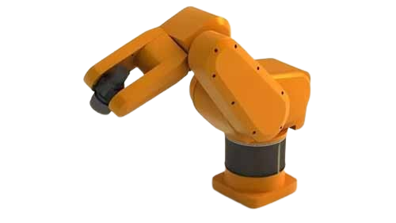
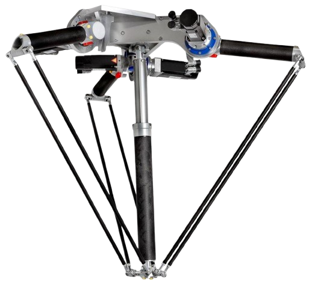

ROBÔ ESFÉRICO
ROBÔ POLAR
O robô Polar (robô esférico) utiliza uma combinação de movimentos rotacionais e articulações angulares, formando uma área de trabalho esférica. Essa arquitetura facilita o acesso a regiões difíceis, mantendo boa capacidade de carga e flexibilidade para tarefas exigentes.

Conceito
O robô Polar (esférico) tem uma arquitetura projetada para proporcionar um espaço de trabalho aproximadamente esférico. Ele combina movimentos rotacionais e articulações para alcançar posições em diferentes direções com boa capacidade de carga.
Princípio de funcionamento
O controle coordena os eixos angulares e rotacionais para apontar o braço até a região necessária. A partir do posicionamento, o efetuador é colocado no ponto de trabalho com correções por sensores/encoders e ajustes de trajetória.
Principais características técnicas
- Espaço de trabalho aproximadamente esférico
- Alta capacidade de alcance e acesso a regiões difíceis
- Boa capacidade de carga
- Estrutura robusta para ambiente industrial
- Integração com ferramentas (garras, tochas, cabeças de solda, etc.)
Aplicações industriais
- Fundições e manuseio de materiais
- Soldagem pesada
- Pintura industrial
- Carga e descarga de peças metálicas
- Movimentação em grandes máquinas e linhas automatizadas
Integração com sistemas de automação e IoT
O robô Polar pode atuar em conjunto com sistemas de supervisão para monitorar status, paradas, consumo de energia e eventos de manutenção. Na Indústria 4.0, os dados podem ser publicados/consumidos via protocolos industriais como MQTT, OPC UA, Profinet e Ethernet Industrial (Ethernet/IP), viabilizando monitoramento remoto, coleta de dados em tempo real e manutenção preditiva.
Modelos comerciais
| Modelo | Fabricante |
|---|---|
| Polar / esférico (famílias industriais) | Kawasaki |
| Polar (séries com alcance para aplicações pesadas) | KUKA |
| Robôs de trabalho pesado (arquiteturas com amplo alcance) | ABB |
Exemplos de modelos/líneas comerciais com fabricantes diferentes para atender ao requisito do catálogo.
Desempenho
Funcionamento
1
Recebe a programação da tarefa industrial.
2
Posiciona seus eixos para alcançar a área desejada.
3
Executa a movimentação ou manipulação da peça.
4
Retorna à posição inicial aguardando um novo ciclo.
